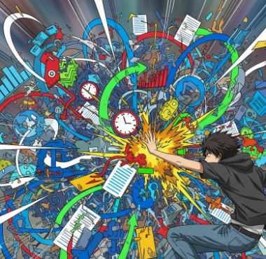

はじめまして！
fumifumi（フミフミ）といいます。
Synapse Creationsの意味は、シナプスのように色々なものを取り入れ、つなげ、創作するという意味でつけました。
AIと共に、ゲームや音楽、ウェブ制作を通して、創造することの喜びを追求しています。
私のデジタル作品が、あなたの好奇心を刺激できたら嬉しいです。
創作活動について
Visual Studio Codeで編集をしており、
基本的なAI機能は、Googlejeminiを使用しています。
背景やアイコンは、CryptoNinja Partners（CNP）の素材からAIの二次創作しています。
CryptoNinja Partners（CNP）は、元々NFTであり私のアイコンの画像は、そのオーナーです✨
また、音楽はSunoを使用して制作しています。
これからも、アップデートしながら創作していきますのでよろしくお願いします。
----------
Gams


Music
下のリストから聴きたい曲を選んでください。

そのまま
あなたらしく！
あなたのそばに、そっと寄り添う曲

Silent Hero -DQver-
社畜ビート
現代をドラクエ風にラップ

Where the Wind Goes
風の行方。なぐさめラップ
傷と想いが交差するエモラップ。

灯-Tomoshibi
次の日、次へ行くため
エールをラップに

Stuck but Breathing
立ち止まっても、、、
それでも前へ

No Words, Just Work
言葉は要らない
ただ仕事をするだけひたすら叫ぶラップ
More Music
制作した音楽の一覧ページへ移動します。
Other Creations